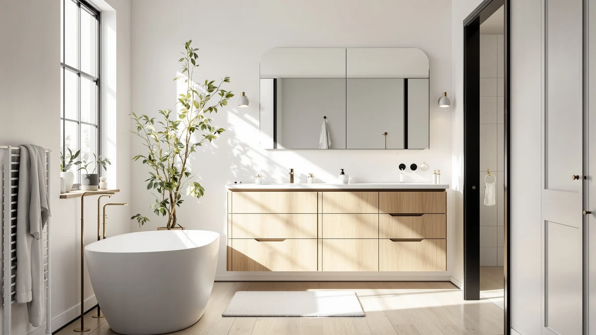

Best How to Organize Under Sink Storage (2026) | Best Bathroom Storage


Things to Know Before You Buy
- The P-trap, that U-shaped drain pipe, is the single biggest obstacle. Measure its height and position before you buy anything.
- The cabinet floor is the dampest spot in the room. Keep paper goods and cardboard off the deck with shelf liner or a riser.
- Two-tier and pull-out organizers nearly double your usable space by turning dead vertical air into shelves.
- Buy organizers that adjust or split in halves so they flank the pipe. Skip one-piece rigid units that hit the plumbing.
- Group items by how often you reach for them. Daily things go front and at eye level, refills go to the back.
Figuring out how to organize under sink storage turns one of the most frustrating cabinets in your home into space you can use. The area under a bathroom sink fights you on three fronts: a curved drain pipe eats the middle, the floor stays damp from condensation, and the doors block half the opening. Most people respond by stacking bottles until the door barely shuts, then forgetting what lives in the back.
This guide walks you through five steps that take about an hour and cost around $40 in bins and liner. You will clear the cabinet, measure the awkward gap around the plumbing, choose organizers that fit, and set up zones you can keep tidy without thinking about it. No power tools, no cabinet modifications, and nothing that risks a renter's deposit.
What You'll Need
- Supplies: Adhesive labels or a label maker, non-adhesive shelf liner, all-purpose cleaner and a cloth
- Tools: Tape measure, stackable storage bins or an adjustable under-sink rack
Step 1: Empty the cabinet and clean it out
Pull everything out and set it on the floor or counter where you can see it. This sounds tedious, but you cannot plan under-sink storage around the plumbing while half the contents hide behind a bottle of drain cleaner. Lay items out in a single layer so nothing stays forgotten in a back corner.
With the cabinet bare, wipe down the floor and walls with all-purpose cleaner. Sink cabinets collect dust, dried toothpaste, and the occasional slow leak you never noticed. Run your hand along the bottom near the pipe and check for soft spots or water stains, because a damp deck means you should fix a drip before you reload the space. Let everything dry fully.
If the cabinet floor feels rough or stained, cut a piece of non-adhesive shelf liner to size and drop it in. It protects the wood from future spills and gives your bins a slip-free base to sit on.
Step 2: Sort, purge, and group what you keep
Now go through the pile on the floor. Toss anything expired, empty, or crusted shut. Backup shampoo you bought two years ago and never opened counts as clutter, not storage. Be honest about duplicates, since most bathrooms hide three half-empty bottles of the same thing.
Sort what survives into groups by purpose: daily toiletries, cleaning supplies, hair tools, paper refills, and first-aid or medicine. Keep cleaning chemicals separate from anything you put on your body, and if children can reach this cabinet, move bleach and drain cleaner up high or add a child lock. Grouping now tells you how many bins you need and what size before you spend a dollar.
This step is where most people reclaim the most room. A cabinet that looked full often holds 40 percent trash and redundancy, so clearing it first means you organize under sink storage around what you keep instead of what you forgot you owned.
Step 3: Measure around the plumbing
Grab your tape measure and write down four numbers: the full interior width, the depth from back wall to the inside of the closed door, the total height, and the height and side-to-side position of the P-trap. That curved pipe is the reason generic shelving never fits, so measuring it is the difference between an organizer that slides in and one that goes back in the box.
Measure the door opening too, not just the cabinet interior. Hinges and the center stile often make the opening two to three inches narrower than the box behind it, and a bin that fits the interior but not the opening helps no one. Check whether your pipes run straight down or exit out the back, since that changes which side of the cabinet stays usable.
Keep these numbers on your phone while you shop for under-sink storage. Most two-tier and pull-out organizers list their footprint and the clearance they leave for plumbing, so you can match their specs against your gap instead of guessing in the store.
Step 4: Fit organizers around the P-trap
Choose organizers that split or adjust around the pipe rather than a single rigid box. Two-tier racks with separate left and right towers, pull-out drawers, and stackable bins all work because you position them on either side of the P-trap and leave the center open. A height-adjustable shelf lets you set the upper tier just above the trap so no vertical space goes to waste.
Place the tallest items, like spray bottles and a hair dryer, in the open zone directly under the faucet where headroom is greatest. Slide bins of smaller items onto the side shelves where the pipe steals height. Put a small turntable in a back corner so you can spin hard-to-reach bottles forward instead of digging for them.
Test the doors before you call your under-sink storage done. Close them fully and confirm nothing blocks the swing or rubs the hinges. If a bin sticks out, set it on a pull-out tray so you can reach the back without unloading the front row every time.
Step 5: Label each zone and set a reset routine
Label the front of each bin so the system survives the first busy morning. A label maker looks neat, but a strip of painter's tape and a marker works just as well. Labels stop the slow drift back into chaos because anyone who opens the cabinet knows where things belong and, more important, where to return them.
Assign zones by frequency. Daily toiletries sit front and center, weekly cleaning supplies go to one side, and bulk refills fill the back and the higher shelf. When you reach for the last roll of anything, that empty slot becomes your shopping reminder, which keeps you from buying a fourth bottle of hand soap.
Spend two minutes once a month resetting the cabinet. Push bins back into place, toss anything empty, and wipe the liner. A quick monthly reset keeps your under-sink storage organized far longer than one ambitious afternoon ever will.
Common Mistakes to Avoid
The most common mistake is buying organizers before measuring the P-trap. A rigid one-piece shelf that looks perfect online arrives, hits the drain pipe, and ends up unused in a closet. Measure first, then buy organizers built to split around plumbing.
People also forget the door opening. You measure the roomy interior, order a wide bin, and discover the hinges and center post make the opening too narrow to pass it through. Always measure the gap you actually reach through, not the box behind it.
Stacking everything on the damp cabinet floor causes slow damage you notice months later. Cardboard boxes wick moisture, paper labels peel, and the wood underneath softens. Lift paper goods and electronics off the deck with shelf liner, a riser, or the lower tier of a rack.
Overpacking is its own trap. A cabinet crammed to the doors looks organized for a week, then collapses the moment you pull one bottle. Leave breathing room so you can remove and replace items with one hand.
Many people also store chemicals and personal-care products together. Drain cleaner next to your toothbrush refills is a safety problem, not a storage style. Keep cleaning chemicals on one side or up high, especially if children can open the cabinet. Fixing these five habits is most of what it takes to organize under sink storage that stays usable.
Our Top Picks
The right hardware does half the work. These three organizers handle the P-trap problem in different ways, so pick the one that matches your cabinet and your budget for under-sink storage that holds up.

Editor’s Pick
Delamu 2-Tier Multi-Purpose Bathroom Under
The Delamu splits into two height-adjustable tiers that sit on either side of the drain pipe, which solves the hardest part of organizing this cabinet. At around $26 it gives you the most usable shelf space for the money, and the metal frame shrugs off the damp better than plastic.
$25.99
Check Price on Amazon
Best Value
Vtopmart 4 Pack Bathroom Organizer
If your cabinet holds mostly small bottles and tubes, the Vtopmart clear bins beat any rack. Four stackable containers let you build zones at whatever height the plumbing allows, and the clear walls let you spot a low refill at a glance. They hold less bulk than a full shelf unit, but they wipe clean in seconds.
$31.59
Check Price on Amazon
Premium Choice
PXRACK Under Sink Organizer Adjustable
The PXRACK is the sturdiest option here, with a wider adjustable frame and pull-out drawers that carry heavier loads like hair tools and full cleaning bottles. It costs more and takes longer to assemble, but the extra rigidity pays off in a family bathroom where the cabinet gets opened a dozen times a day.
$46.99
Check Price on AmazonFrequently Asked Questions
How do I organize under sink storage around the pipes?
What is the best type of organizer for under a bathroom sink?
How much does it cost to organize an under-sink cabinet?
How do I keep the under-sink cabinet from getting damp?
How often should I reorganize the cabinet under my sink?
Verdict
Learning how to organize under sink storage comes down to working with the plumbing instead of against it. Clear the cabinet, measure the P-trap and the door opening, purge what you no longer use, and fit organizers that split around the pipe rather than a single rigid box. Label your zones and reset for two minutes a month, and the cabinet stays usable long after the first afternoon of effort.
For most bathrooms, the Delamu 2-Tier organizer is the piece that ties it together, since its adjustable split shelves were built for this awkward space and it costs about $26. If your cabinet holds mostly small items, the Vtopmart bins do more for less, and a heavy-use family bathroom is where the sturdier PXRACK earns its higher price. The system matters more than the hardware, so measure first, group by how often you reach for things, and give everything a labeled home.